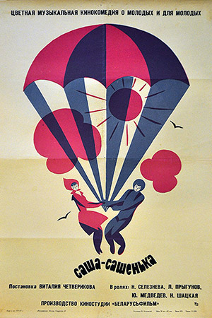

Главная | Общая информация| История| Дискография| Фильмография| Источники| Заказать| Контакты
| Год | Название | Роль | Афиша | Примечание |
| 1954 | Сверстницы | Петя (студент театрального училища) | Х/ф | |
| 1961 | Карьера Димы Горина | Софрон (шофёр) | Х/ф | |
| 1962 | 713-й просит посадку | американский моряк морской пехотинец | Х/ф | |
| 1963 | Штрафной удар | Юрий Никулин (гимнаст;он же Маслюков - зав. птицефермой) |
| Х/ф |
| 1966 | Саша-Сашенька | певец с гитарой |  | Х/ф |
© Все права защищены.В.А.Буренин,ММО 221-9, 2024